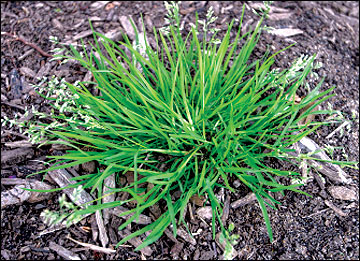
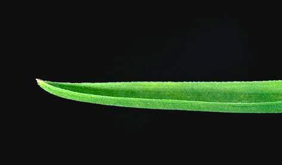
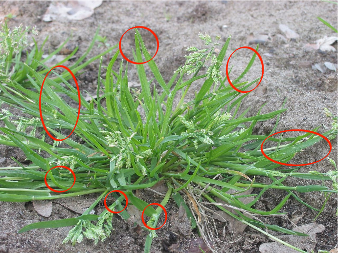

Annual Bluegrass (Poa annua)
 

You can recognize bluegrass by the tuft of cobwebby hairs at the base of each floret, by a parallel, translucent line on either side of the leaf’s midrib, and by the abruptly incurved leaf tip resembling a boat prow in three dimensional shape. Annual bluegrass is distinct from other species of bluegrasses by the leaf blades’ rugosity, referring to the crinkled or puckered area that runs across some blades about one-third the distance from the tip.